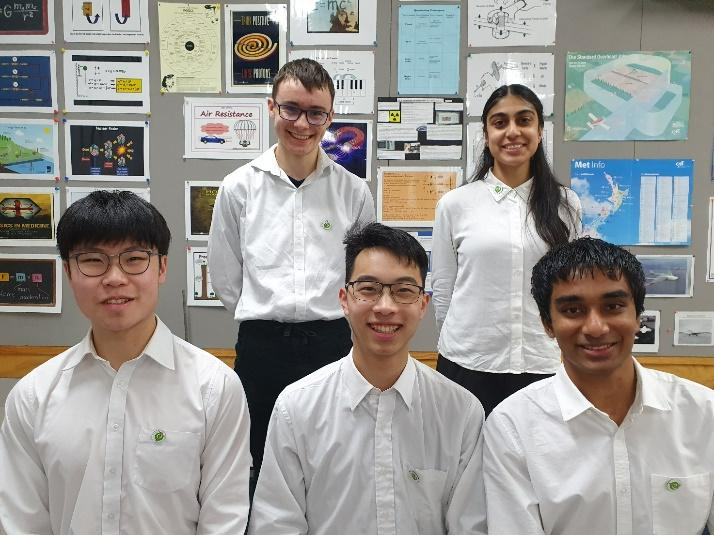
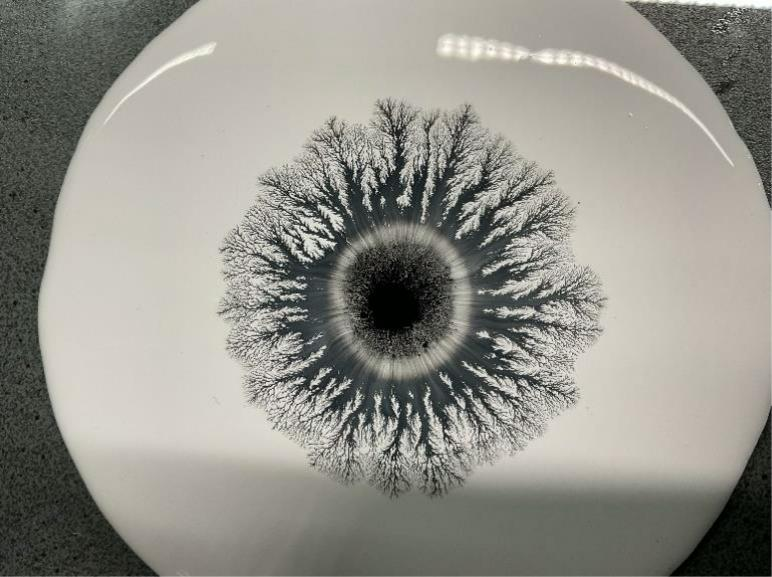

The International Young Physicists’ Tournament (IYPT) is a competition created in the USSR to foster scientific research and improved international communication in Physics. It is an annual team competition for high school physics students which had its first international event in 1988.
The IYPT is a major international Physics competition with students from high schools across the world taking part in the “World Cup of Physics”. Students participating in IYPT are selected by their member organisations in countries around the world due to a balance of theoretical and practical physics as well as an ability to communicate complex concepts to an audience and think on their feet! All of the IYPT problems and discussions in the debates during the tournament take place in English.
Each country is represented by a national team consisting of five students. In the August prior to the competition seventeen complex open-ended problems are released for the team to theoretically and experimentally research. At the competition the teams present and defend the validity of their problem solutions against teams from other countries in structured debates called “Physics Fights”. Jury panels consisting of university lecturers, industrial physicists and physics teachers rate the student’s report findings and the quality of their explanations when questioned by an opposing team.
In the early part of the school year individual students from any school can apply to represent New Zealand in IYPT. Students carry out research and present their findings to the National Organising Committee in a series of interviews. The five most successful students are selected by the NOC to represent NZ in IYPT.
In addition to the international competition, IYPT, New Zealand students have the option to participate in a national school-based competition NZYPT. This competition uses a subset of seven problems from the seventeen problems in IYPT. The IYPT problems are announced in (approx.) August of the previous year. A school can enter up to two teams consisting of three students in each team. The teams have the option to compete face to face or via “ZOOM” type online debates. The top team from this competition receives the NZYPT top school trophy and the 2nd and 3rd placed teams are awarded medals. The top team as well as individual students whose research is of a sufficiently high standard are considered for New Zealand representation in IYPT. We rely on the generous support of the New Zealand Royal Society, the New Zealand Institute of Physics, tertiary institutions and the Physics teaching community to carry out this event annually.
New Zealand has competed in IYPT since 2003 and New Zealand teams have a strong reputation in the event where our highly respected teams are regularly awarded medals. The competition is all about problem solving, teamwork, thinking outside of the square and explaining complex scientific ideas concisely. NZYPT is proud to excite student interest in Physics and encourage diversity and creativity in student focussed research. The four students who have won Te Puiaki Kaipūtaiao Ānamata - The Prime Minister’s Future Scientist Prize after taking part in IYPT reflect the all-round ability required to do well in this tournament.
MFAT warnings and security concerns for the IYPT event in Pakistan in 2023 meant that New Zealand did not send a team to the international event in Murree, Pakistan. For the countries that did compete in Pakistan the final result was Poland in 1st place with Thailand in 2nd and Slovakia in 3rd place.
The New Zealand IYPT team competed in the OnlineIYPT 2023 event. This enabled New Zealand students to gain valuable international experience but we would have preferred to attend a physical event. 18 Teams from countries around the world participated OYPT which was won by Singapore with Germany in 2nd and Austria in 3rd place. New Zealand were placed 12th overall.
(Capt) Tait Keller (Onslow College), Vibhaa Sharma (Mount Albert Grammar School), Sean Wang (St Kentigern College), Ethan Huang (Kings College), Ramanujan Madhusudhan (Auckland Grammar School)

We are looking forward to sending a New Zealand team to the 37th IYPT in Budapest, Hungary scheduled to take place from the 10th to the 17th of July 2024.
To get a flavour of one of the 2023 IYPT problems called “Fractal fingers” students were asked to investigate the effect of fractal fingering. This can be observed if a droplet of an ink-alcohol mixture is deposited onto diluted acrylic paint.
The research required them to investigate how the geometry and dynamics of the fingers were influenced by relevant parameters. Here is a picture from one of the student projects.
